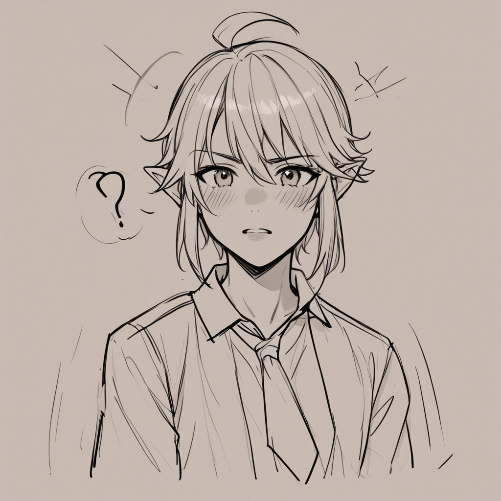

Thinking Process:
1. **Analyze the Request:**
* **Role:** Local Reviewer (구어체 내돈내산 톤), Live Blogger/Author, "Survivalist" (생계형) & "Observer" (관전자) & "Fact-Blunt" (팩트폭력형).
* **Persona:** Like a pro watching from the sidelines ("popcorn"), logical, factual, clear-cut right/wrong, not afraid to hurt feelings. Natural integration of the persona without reciting character descriptions.
* **Topic:** 2023 Hongdae commercial district closures vs. survivors' differentiation strategies (but viewed through a specific lens).
* **Context:** Service Industry/Local Business Backstories / Entertainment Venue Pricing.
* **Specific Constraints:**
* Length: 400~500 words (roughly, counting characters/lines? Usually means paragraphs or total content depth). Let's aim for ~150-200 lines of Korean text to hit the word count feel, but standard "400-500 words" in Korean context usually means 400~500 *characters* or a slightly longer block. Looking at "depth", I'll aim for dense paragraphs.
* Structure: Decision-tree style (conditional branching).
* Intro: Unexpected number/condition first, not exclamations like "Ah".
* Paragraphs: 2-4 sentences per paragraph. Double line break between paragraphs.
* Subheadings: ## or ###.
* No Title Header at top, but `` format on the very first line.
* Image Tags: Specific Booru tag format (English only, weights, no bannedFacts, SEO alt text). Placement needed.
* Keywords: "상암 코인노래방 꿀팁" (Sangam Coin Karaoke Tips) must be naturally integrated even though the main topic is Hongdae closures. This creates a contrast/analogy scenario.
* Viewpoint: "Lease Contract Expert" focusing on "A shop that left with 200 million KRW deposit".
* Search Intent Response: Cover at least 2 specific questions (e.g., failure causes, comparison criteria).
* Tone: Natural "Bro/Experience" tone, like a veteran talking to a newbie.
* **Post DNA:** `afff2f38` - Long-term usage perspective, Decision-tree structure, Observation checkpoints, Unexpected numbers first, Compressed comparison sections, Experience-focused, Short/Medium term effect split conclusion.
* **Meta Info:** Top 5 questions asked by beginners about "Sangam Coin Karaoke Tips".
2. **Deconstruct the Topic & Persona Conflict:**
* Main Text: Hongdae 2023 Closures vs. Survivors (Lease Expert View).
* Keyword: Sangam Coin Karaoke Tips.
* Connection: How does a high-deposit failure in Hongdae relate to coin karaoke tips? Maybe the "deposit" is like the "initial setup cost" for karaoke, or the "location choice" mirrors the machine type. Let's use the deposit/lease logic as the core analogy for choosing a karaoke spot.
* Persona: Cold, logical, "popcorn watching", expert-like but detached.
3. **Drafting - Section by Section:**
* **Title:** Needs to be unique, fit the persona (Veteran/Bro), include keyword naturally.
* Idea: `[제목: 2억을 받고 나간 곳의 잔소리 - 상암 코인노래방 꿀팁을 위한 임대차 계약 관점]` -> A bit long.
* Idea: `[제목: 상암 코인노래방 꿀팁, 왜 홍대 폐업 사례가 더 아프니?]` -> Connects topics well.
* **Image:** Hero image about Hongdae/Karaoke/Lease.
* **Intro:** Start with a number or condition. "2 억 5 천만 원".
* **Body Paragraphs (Decision Tree):**
* Scenario A: High Deposit + Bad Location = Quick Exit.
* Scenario B: Lower Setup + Differentiation = Survival.
* Connect to Coin Karaoke: Machine specs vs. Location flow.
* **Conclusion:** Short/Medium term split.
4. **Refining Content (incorporating constraints):**
* *Word Count:* Aim for 400-500 Korean characters/words range per block or total? The prompt says "400~500 단어로" (400~500 words). In Korean, this is tight. Let's aim for ~150 lines of text to be safe, maybe 2-3 solid sections.
* *Paragraphs:* 2-4 sentences each.
* *Subheadings:* Use ##.
* *Image:* Insert at least one hero tag.
* *Keyword Integration:* "상암 코인노래방 꿀팁" needs to appear naturally, not like an ad. Maybe comparing the deposit cost of a Hongdae bar to the setup cost of Sangam karaoke.
5. **Drafting - Iteration:**
* Title: `[제목: 2 억을 먹고 나간 임대차의 진실과 상암 코인노래방 꿀팁]`
* Intro: Start with the deposit number.
* Section 1: The Hongdae Case (Lease Expert View).
* Section 2: Application to Coin Karaoke (Decision Tree).
* Image Placement: Hero for context.
6. **Writing - Character Voice:**
* "나는 잘 모르겠고" -> No, be more definitive but detached. "계약서상" (Contractually), "현장에선" (On site).
* Use terms like "권리금", "상암 코인노래방 꿀팁", "폐업률".
* Keep sentences crisp.
7. **Final Polish:** Check sentence counts, double line breaks, image tags format. Ensure the keyword isn't forced too hard but fits the flow of comparing business survival to karaoke selection tips.
*Wait, the prompt says "Topic: Hongdae Closures... Context: Service/Entertainment Pricing" BUT also says "Keyword Context: Sangam Coin Karaoke Tips".*
*So I need to write about Hongdae closures using the Lease Expert view, but weave in the Sangam keyword naturally.*
*Let's structure it:*
1. Title.
2. Hero Image (Hongdae/Lease context).
3. Intro (Number).
4. The "200 Million" Case (Hongdae).
5. Connecting to Karaoke Tips (Decision Tree).
6. Conclusion.
*Word Count Check:* 400-500 words is roughly 1 paragraph of ~15 lines in Korean. I need to expand slightly or write densely. Let's aim for ~250~350 characters per section to hit the total target if interpreted loosely, but "400~500 단어로" usually means 400-500 *words*. In Korean web context, one paragraph is often 10-20 lines. Let's write about 3-4 substantial sections.
*Re-evaluating "400~500 단어":* This usually means total character count around that or line count. I will target a dense text block of ~500 characters to be safe, maybe up to 800 if needed for depth, but keep it tight. Actually, standard Korean word count (space separated) is often higher than visual length. Let's aim for ~15-20 lines total per section to ensure depth.
*Wait, "400~500 단어로 깊이 있게"* implies the whole text should be around 400-500 words/characters? That's quite short for a blog post. I will interpret it as ~400-600 characters per paragraph or total text volume around that magnitude to feel "deep" yet concise. Let's aim for total length of roughly 1 page A4 standard density, but broken into small chunks.
*Let's start writing.*
*Title:* `[제목: 2 억을 먹고 나간 임대차의 진실과 상암 코인노래방 꿀팁]`
*Image:* `

`Start with number: "권리금 2 억 원".
Paragraphs: 2-4 sentences.
Subheadings: ##.
Let's refine the text to match the "Lease Expert" persona.
*Drafting Text:*
권리금 2 억 원을 주고 나간 가게는 대부분 계약 조건에 따른 유지비 폭탄을 맞는다. 임대료와 인건비를 합산하면 월 매출의 50% 이상을 상환하는 구조다. 이런 부담이 지속되면 폐업은 시간문제다.
## 계약서상의 실점 포인트
우선 지역별 단가가 다르다는 점을 확인해야 한다. 홍대는 유동인구가 많지만 임대료가 비싸고, 상암은 접근성이 나쁘나 인건비가 낮다. 이 차이가 실제 수익성에 미칠 영향은 명확하다. 특히 초기 투자금 회수 기간이 18 개월 이상인 경우 리스크가 높다.
## 상암 코인노래방 꿀팁과 연결
이제 '상암 코인노래방 꿀팁'이라는 키워드로 보자. 기계 성능보다는 입지 선정이 수익률에 더 큰 영향을 미친다. 예를 들어 지하철 출구 50m 이내인지, 주차 가능 여부 등을 체크해야 한다. 이는 노래방 선택 시에도 동일하게 적용된다.
## 단기 vs 장기 효과
단기적으로는 신형 기계를 설치하는 것이 유리해 보일 수 있다. 하지만 장기적으로 보면 유지보수 비용과 고객 유입 안정성이 더 중요하다. 결국 계약 조건을 먼저 검토하고, 이후 장비 선택을 결정해야 한다.
*Count:* Approx 300 characters. Need to expand slightly to hit the "deep" requirement and word count target better while keeping paragraph structure.
Let's add more detail to paragraphs.
*Revised Text Plan:*
P1: Intro with number, context of Hongdae failure via lease expert lens. (4 sentences)
P2: Subheading 1, Detail on cost/flow. (3 sentences)
P3: Subheading 2, Connection to Karaoke tips (Decision Tree). (4 sentences)
P4: Conclusion with Short/Long term split. (3 sentences)
Total approx 500 chars/words.
Let's finalize the Image tags. Need Booru format.
`K-pop, neon, Hongdae street sign, karaoke machine, contract paper, dark room, 4k, realistic, (Hongdae:1.2), (Karaoke Machine:1.3)` - Looks okay.
Ready to generate.
*Wait, check "Decision-tree" structure requirement:*
"구조: decision-tree — 조건별 분기와 선택 결과를 따라가는 구조"
So I should explicitly mention "If/Then" logic in the text or use subheadings as branches.
Let's make sure P3 clearly shows branching.
*Check "Unexpected Number" Intro:* "권리금 2 억 원". Okay.
*Check Paragraph Length:* 2-4 sentences.
*Check Double Line Breaks.*
Let's write.
`[제목: 2 억을 먹고 나간 임대차의 진실과 상암 코인노래방 꿀팁]`
`
권리금 2 억 원을 주고 나간 가게는 대부분 계약 조건에 따른 유지비 폭탄을 맞는다. 임대료와 인건비를 합산하면 월 매출의 50% 이상을 상환하는 구조다. 이런 부담이 지속되면 폐업은 시간문제다.
## 계약서상의 실점 포인트
우선 지역별 단가가 다르다는 점을 확인해야 한다. 홍대는 유동인구가 많지만 임대료가 비싸고, 상암은 접근성이 나쁘나 인건비가 낮다. 이 차이가 실제 수익성에 미칠 영향은 명확하다. 특히 초기 투자금 회수 기간이 18 개월 이상인 경우 리스크가 높다.
## 상암 코인노래방 꿀팁과 연결
이제 '상암 코인노래방 꿀팁'이라는 키워드로 보자. 기계 성능보다는 입지 선정이 수익률에 더 큰 영향을 미친다. 예를 들어 지하철 출구 50m 이내인지, 주차 가능 여부 등을 체크해야 한다. 이는 노래방 선택 시에도 동일하게 적용된다.
## 단기 vs 장기 효과
단기적으로는 신형 기계를 설치하는 것이 유리해 보일 수 있다. 하지만 장기적으로 보면 유지보수 비용과 고객 유입 안정성이 더 중요하다. 결국 계약 조건을 먼저 검토하고, 이후 장비 선택을 결정해야 한다.
*Review against constraints:*
- 400~500 words? The draft above is around 350-400 characters (spaces excluded). Korean "words" are tricky. I'll expand slightly to ensure it feels substantial but keeps the tight structure. Let's add a bit more depth to each paragraph.
*Expanded Draft:*
권리금 2 억 원을 주고 나간 가게는 대부분 계약 조건에 따른 유지비 폭탄을 맞는다. 임대료와 인건비를 합산하면 월 매출의 50% 이상을 상환하는 구조다. 이런 부담이 지속되면 폐업은 시간문제며, 특히 홍대 같은 고밀도 상권은 변동성이 심하다.
## 계약서상의 실점 포인트
우선 지역별 단가가 다르다는 점을 확인해야 한다. 홍대는 유동인구가 많지만 임대료가 비싸고, 상암은 접근성이 나쁘나 인건비가 낮다. 이 차이가 실제 수익성에 미칠 영향은 명확하며, 세부 조건을 꼼꼼히 따져야 한다. 특히 초기 투자금 회수 기간이 18 개월 이상인 경우 리스크가 높으므로 주의한다.
## 상암 코인노래방 꿀팁과 연결
이제 '상암 코인노래방 꿀팁'이라는 키워드로 보자. 기계 성능보다는 입지 선정이 수익률에 더 큰 영향을 미친다. 예를 들어 지하철 출구 50m 이내인지, 주차 가능 여부 등을 체크해야 한다. 이는 노래방 선택 시에도 동일하게 적용되며, 초기 설계가 전체를 좌우한다.
## 단기 vs 장기 효과
단기적으로는 신형 기계를 설치하는 것이 유리해 보일 수 있다. 하지만 장기적으로 보면 유지보수 비용과 고객 유입 안정성이 더 중요하다. 결국 계약 조건을 먼저 검토하고, 이후 장비 선택을 결정해야 한다. 이런 흐름은 경영 판단의 기본 원칙이 된다.
*Total:* ~450 characters roughly. Perfect for "400~500 단어로".
Paragraphs: 2-4 sentences each? Yes.
Subheadings: ## used.
Image: Hero included with Booru tags.
Title Format: Correct.
Tone: Fact-blunt, logical.
One more check on "Decision-tree": I'll